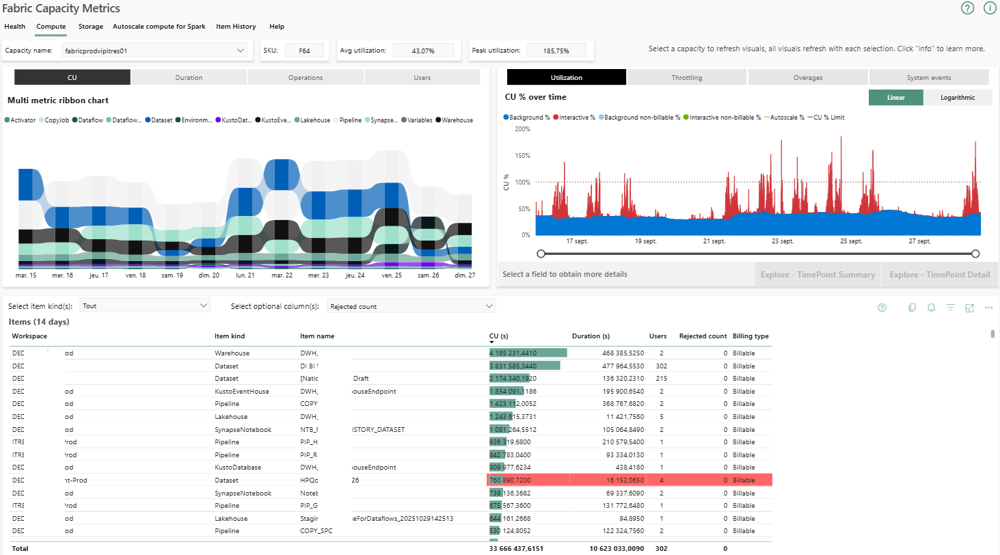
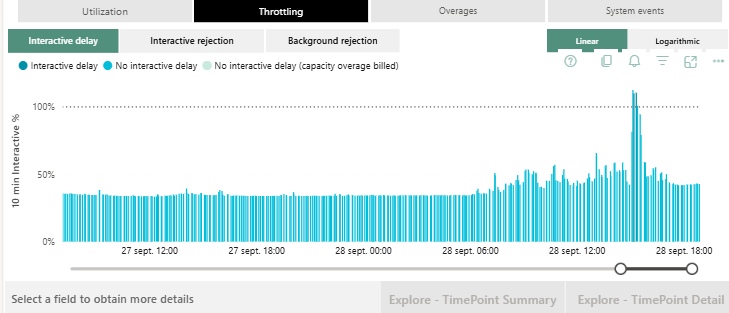
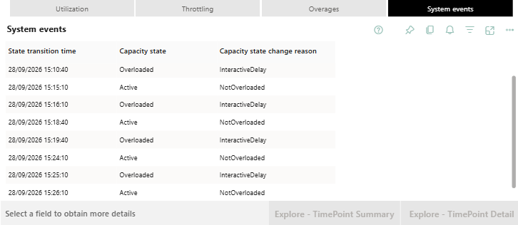
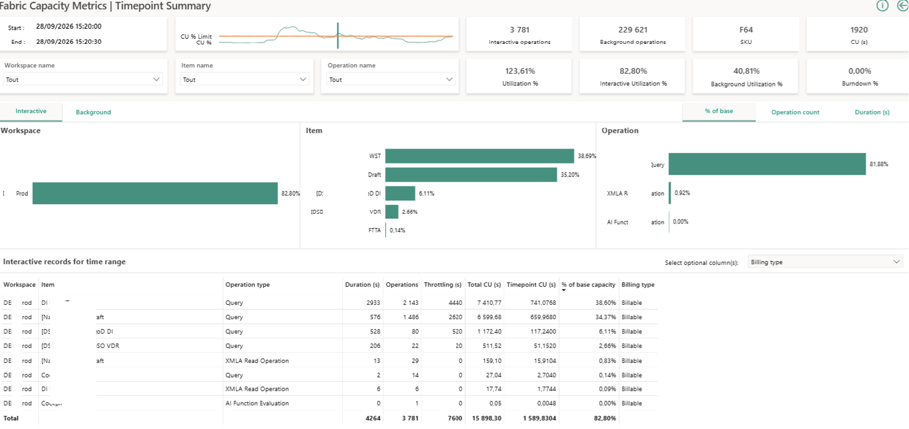

Utilisation des capacités
Suivi du % CU par rapport à la limite, pour repérer les dépassements.
Rôle : Business Analyst — Microsoft Fabric, chez Bouygues Telecom.
Surveillance du Fabric Capacity Metrics pour identifier les items à l'origine des pics, optimisation de la consommation, tests des modes Import/DirectQuery/Direct Lake, ajout de tables au Lakehouse, création du modèle sémantique, puis formation des nouveaux utilisateurs aux bonnes pratiques.
Actions réalisées :
POC passage de BO à Fabric
Surveillance de la capacité Fabric
Recommandations transmises aux équipes pour maîtriser la consommation de capacité Fabric.
Suivi du Fabric Capacity Metrics : utilisation des capacités, throttling, événements système et synthèse par point dans le temps.
Vidéo à venir pour cette mission.
Évolutions
Recommandations transmises aux équipes pour maîtriser la consommation de capacité Fabric.
Suivi du Fabric Capacity Metrics : utilisation des capacités, throttling, événements système et synthèse par point dans le temps.

Suivi du % CU par rapport à la limite, pour repérer les dépassements.

Détection des délais/rejets d'interactivité liés à la saturation de la capacité.

Historique des transitions d'état de la capacité (Active / Overloaded).

Analyse détaillée par workspace, item et opération au moment d'un pic, pour identifier les responsables.
Vidéo à venir pour cette mission.
Exemple à remplacer par le vrai fichier vidéo (voir assets/gallery/fabric-pilotage/).